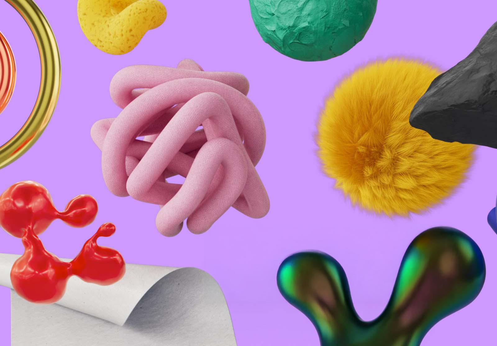
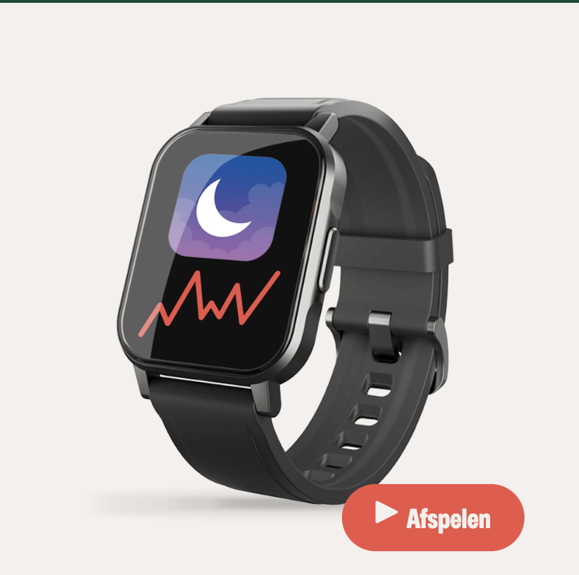
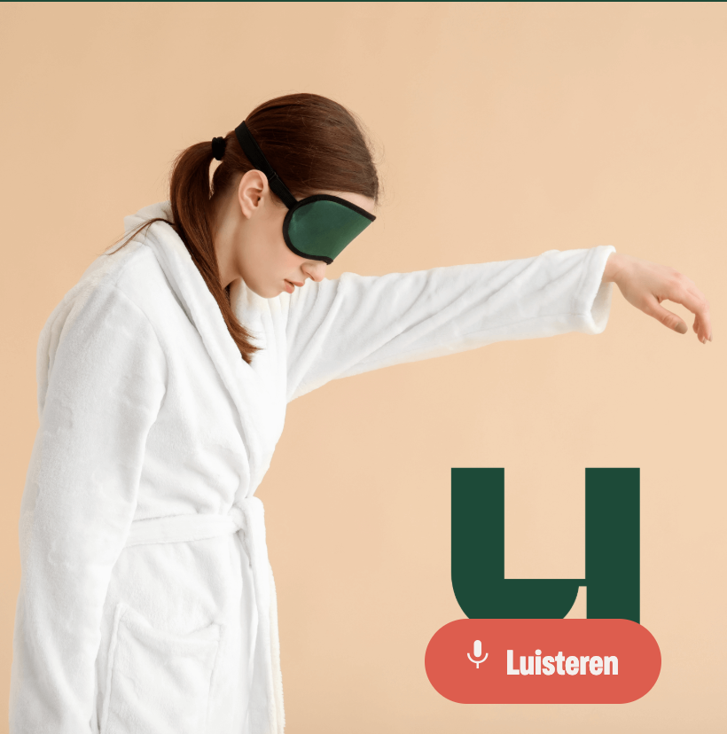
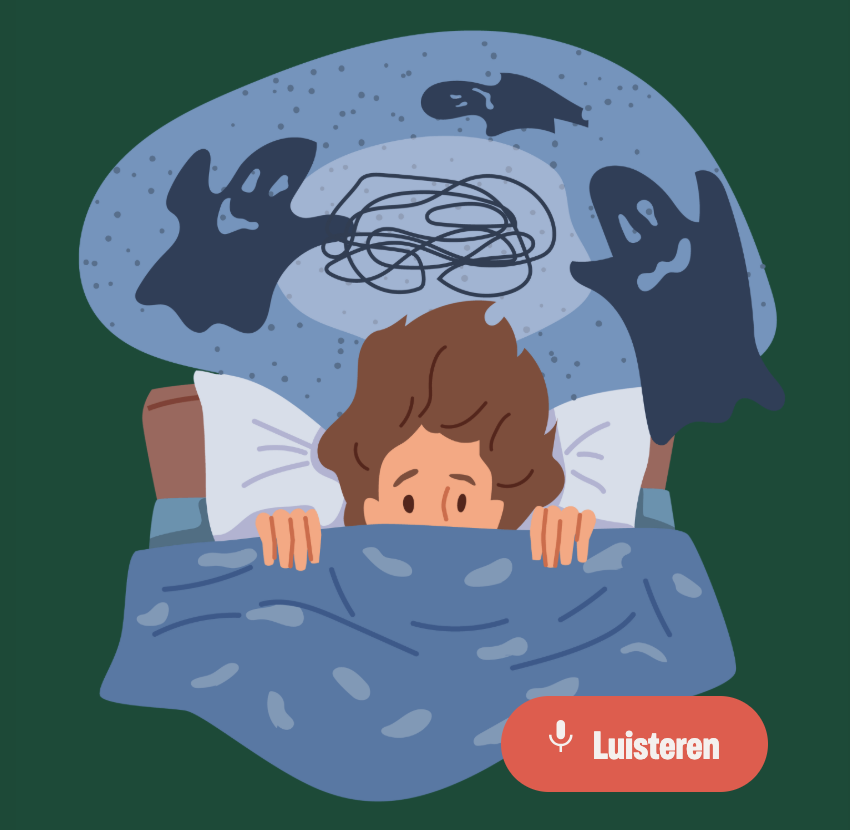
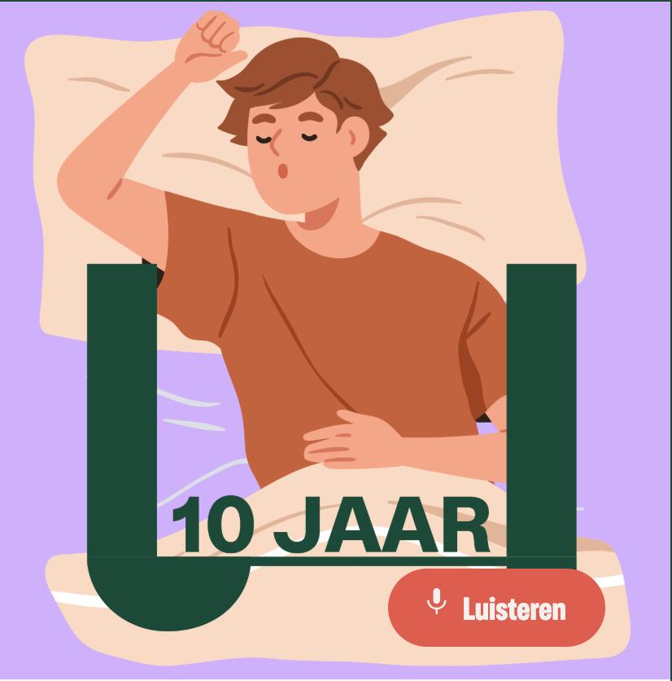
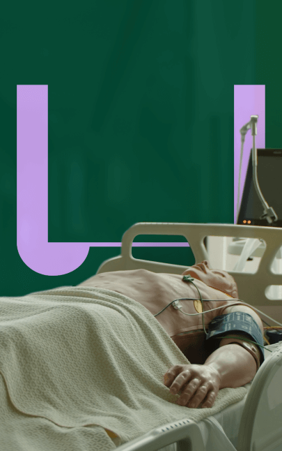

De universiteit voor iederéén
Topwetenschappers voor iederéén
De Universiteit van Nederland helpt iedereen de wereld beter te begrijpen. We vertellen je wat je wil weten, en alles waarvan je nog niet eens wist dat je 't wilde weten. Geen enkele vraag blijft onbeantwoord in onze video's en podcasts. En het beste van alles? We doen het volledig gratis! Voor iederéén.
Schrijf je in voor de nieuwsbrief
Universiteit van Nederland
By redactie
Door je inschrijving ga je akkoord met de Gebruiksvoorwaarden van Substack, ons Privacybeleid en onze Kennisgeving inzake gegevensverzameling.
Alles over slaap💤
Wetenschappers doen veel onderzoek naar slaap. Niet gek, want als het goed is ben je er per dag toch wel een aantal uurtjes zoet mee. Bovendien is slaap erg belangrijk voor je gezondheid, zowel fysiek als mentaal. Op deze pagina vind je tien van de beste afleveringen over slaap uit ons archief. We kunnen helaas niet beloven dat je er beter door gaat slapen. We kunnen wel zeggen dat je na het beluisteren en bekijken van de afleveringen slaap een stuk beter begrijpt.
-

Slaap meten? Dat kunnen apps helemaal niet
Afspelen -
Hoe kan geluid onze slaap redden?
Luisteren -

Slaap meten? Dat kunnen apps helemaal niet
Luisteren -

Hoe kan geluid onze slaap redden?
Afspelen -

Slaap meten? Dat kunnen apps helemaal niet
Luisteren -

Hoe kan geluid onze slaap redden?
Luisteren
Onze videopostcasts
Elke zondag antwoord op een spannende vraag. Beantwoord door een topwetenschapper.
Meer video'sDe Werkplaats
In de werkplaats repareren wetenschappers veel gehoorde misverstanden.
Meer video's